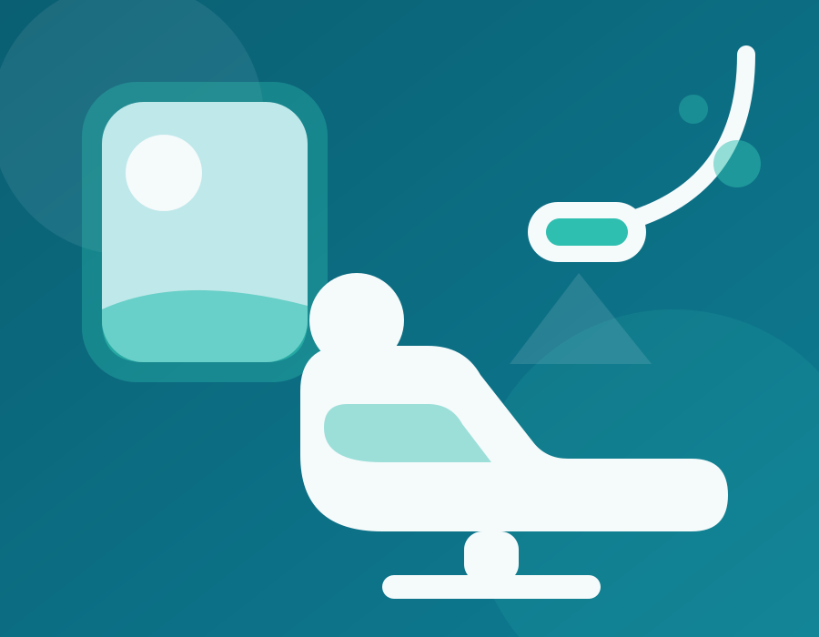

Dra. Carmen Ruiz
Directora médica · Implantología y cirugía oral
Col. 41002387
Odontología familiar sin dolor y sin sorpresas en el presupuesto. Primera visita con revisión completa y radiografía gratis, y financiación hasta 12 meses sin intereses.

Sin compromiso y sin letra pequeña. Sales de la consulta con un diagnóstico claro y un presupuesto cerrado por escrito, y decides con calma.
Exploración de encías, caries y mordida con cámara intraoral: lo ves todo en pantalla contigo, sin tecnicismos.
Ortopantomografía digital incluida en tu primera visita. En otras clínicas la pagas aparte: aquí es gratis.
Por escrito, con cada fase detallada y sin extras a mitad de tratamiento. Lo que firmas es lo que pagas.
Precios claros desde el primer día. Todos los tratamientos se pueden financiar hasta en 12 meses sin intereses.
Implante de titanio con corona de porcelana incluida. Cirugía guiada por ordenador y revisiones del primer año gratuitas.
Quiero informarmeAlineadores transparentes con estudio 3D previo: verás tu sonrisa final antes de empezar. Refinamientos incluidos.
Quiero informarmeBlanqueamiento LED en clínica más férulas de mantenimiento para casa. Hasta 4 tonos más blanco en una sesión.
Quiero informarmeDentista para niños desde los 3 años, con consulta adaptada. Selladores, flúor y mucha paciencia: vienen contentos.
Quiero informarmeTratamiento de encías sangrantes y piorrea. Curetajes por cuadrante con anestesia y plan de mantenimiento periodontal.
Quiero informarmePrótesis removibles y fijas sobre dientes o implantes. Ajuste y adaptación incluidos hasta que quede perfecta.
Quiero informarmeNada de rotaciones: te atiende siempre el mismo especialista, que conoce tu historia y tu boca.
Directora médica · Implantología y cirugía oral
Col. 41002387
Ortodoncia y ortodoncia invisible
Col. 41003615
Odontopediatría y odontología general
Col. 41004928
Periodoncia y estética dental
Col. 41005241
Tu salud no puede esperar al mes que viene. Financiamos cualquier tratamiento en la propia clínica: aprobación en 10 minutos con tu DNI y sin comisión de apertura.
Implante de titanio con corona incluida (1.190 €) en 12 cuotas de 99 €/mes, sin entrada y sin intereses.
La ortodoncia invisible te sale desde 166 €/mes en 12 meses. Dinos tu presupuesto y ajustamos la cuota.
Calcular mi cuotaInvertimos en la misma tecnología que los grandes hospitales para que tú pases menos tiempo en el sillón.
Adiós a las pastas de impresión que dan arcadas. Escaneamos tu boca en 3 minutos y con precisión de micras.
Imagen 3D del hueso antes de cualquier implante. Planificamos la cirugía sabiendo exactamente qué hay debajo.
El implante se coloca con una férula diseñada por ordenador: menos tiempo de intervención y mejor postoperatorio.
Si te da miedo el dentista, no estás solo. Con la sedación estás relajado y tranquilo durante todo el tratamiento.
4,9 sobre 5 en Google con 312 reseñas. Estas son algunas de las últimas.
"Llevaba años sin pisar un dentista por puro miedo. Me pusieron dos implantes con sedación y de verdad que no me enteré. La Dra. Ruiz me llamó al día siguiente para ver cómo estaba. Eso no lo hace nadie."
Los Remedios
"Terminé mi ortodoncia invisible en 14 meses, justo lo que me dijo el Dr. Ortega en el estudio 3D. Lo pagué en 12 cuotas sin intereses y ni una sorpresa en el presupuesto. Repetiría sin dudarlo."
Triana
"Traigo a mis dos hijos con la Dra. Prieto desde los 4 años y vienen encantados, que ya es decir. La primera revisión fue gratis, con radiografía incluida, y nunca nos han metido tratamientos que no hicieran falta."
Tablada
No. La intervención se hace con anestesia local y, gracias a la cirugía guiada, suele durar menos de 40 minutos. La mayoría de pacientes se incorpora a su rutina al día siguiente con una simple pauta de antiinflamatorios. Si tienes ansiedad dental, la sedación consciente hace que ni te enteres.
Depende de cada caso: entre 8 y 18 meses de media. Con el estudio 3D de la primera visita te decimos el plazo exacto y verás una simulación de tu sonrisa final antes de empezar. Los refinamientos están incluidos en el precio, así que el plazo no encarece el tratamiento.
Sí. Reservamos huecos cada día para urgencias: si llamas antes de las 12:00, te atendemos esa misma jornada. Fuera de horario, el teléfono de la clínica te indica el móvil de guardia para pacientes en tratamiento.
Trabajamos con los principales cuadros médicos (Adeslas, Sanitas, Asisa y DKV) y aplicamos sus franquicias directamente en el presupuesto. Si tu seguro no cubre un tratamiento, te lo decimos antes de empezar y puedes acogerte a la financiación sin intereses.
Déjanos tus datos y te llamamos en menos de 2 horas laborables para darte cita. Si lo prefieres, escríbenos por WhatsApp.
Calle Asunción 58, 1º B. Junto a la parada del Metrocentro y con parking público en la calle Virgen de Luján.